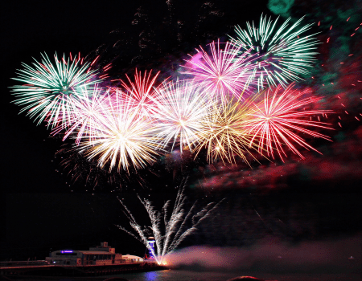

Welcome to fejerverkai
Saliutas.lt - fejerverkai Jums
2020.10.29 11:02
Informuojame, kad šioje svetainėje naudojami slapukai (angl. cookies). Paspaudę mygtuką „Sutinku“ arba naršydami toliau patvirtinsite savo sutikimą. Bet kada galėsite atšaukti savo sutikimą pakeisdami interneto naršyklės nustatymus ir ištrindami įrašytus slapukus. Susipažinkite su privatumo politika.
Taisyklės Suprantu LT +370 698 45756 Užsakymai ir konsultacijos +370 698 45756 Užsakymai ir konsultacijos Prekių krepšelis tuščias Prisijungti arba Registruotis MENIU ŠVENTĖMS VESTUVĖMS Profesionalūs Baterijos FEJERVERKŲ RINKINIAI 2 KATEGORIJA 3 KATEGORIJA Lazerių šou ŽIBINTAI DŪMAI Kita atributika Atlikti darbai Mes KontaktaiMūsų fejerverkai nustebins kiekvieną
Trumpa fejerverkų atsiradimo priešistorė
Fejerverkų istorijos ištakos siekia 200-uosius metus prieš Kristų, kai kinai, gyvenę Han dinastijos metu, į ugnį mesdavo bambuko lazdas, kurios galiausiai sprogdavo. Toks ritualas buvo skirtas dvasioms atbaidyti. Vėliau bambukai pradėti deginti ir per įvairias šventes bei apeigas – meldžiantis, švenčiant gimtadienius bei vestuves, karūnuojant valdovus. Buvo tikima, kad sprogimo garsas ne tik išvaiko piktuosius demonus, bet prišaukia visapusišką gerovę.
Po pirmojo etapo pirmykščių fejerverkų istorijoje, maždaug tarp VI ir IX a., galėjo atsirasti ir juodasis parakas. Iki pat XIX a. tai buvo vienintelė žinoma ir plačiai naudojama sprogstamoji medžiaga. Juodojo parako tėvyne vėlgi laikoma Senovės Kinija, o Europą juodasis parakas pasiekė kur kas vėliau – tik apie XVI a. Vėliau pirotechnika ir jos naujovėmis labiausiai domėjosi vokiečių, italų, o galiausiai – ir anglų išradėjai.
Kaip ir kada atsirado spalvotieji fejerverkai?
Prieš kelis amžius egzistavo vos poros spalvų fejerverkai. Pavyzdžiui, XVIII a. buvo įmanoma pagaminti tik oranžinius ir geltonus fejerverkus. Tik vėliau, panaudojus chloratus, sukurti raudonos bei žalios spalvų fejerverkai. Mėlynos spalvos fejerverkai apskritai sukurti tik praeitame amžiuje.
Tam tikros fejerverkų spalvos išgaunamos veikiant metalų jonams. Šildant išskiriama energija, o kuo didesnė temperatūra, tuo intensyvesnės ir fejerverkų spalvos. Baris fejerverkams suteikia žalią spalvą, natris juos nudažo geltonai, stoncis – raudonai, o varis (vario chloridas) – melsva spalva. Kitos spalvos, pavyzdžiui, violetinė, išgaunamos maišant kitų atspalvių sprogstamąsias medžiagas: šiuo atveju raudoną su mėlyna.
Fejerverkai šiandien
Šiuolaikiniai fejerverkai daugiausiai naudojami įvairių švenčių – tiek asmeninių, tiek viešųjų renginių – metu. Tai šventės kulminacija ir pats karščiausias taškas arba taip vadinamoji „vyšnia ant torto“.
Fejerverkų kūrėjai iki šiol ieško naujovių, o įvairiuose pasaulio kampeliuose kasmet rengiami įspūdingi fejerverkų šou. Neseniai vienas fejerverkų entuziastas iš Kinijos pristatė dienos šviesoje matomus fejerverkus . Pirmiausiai žydrame danguje nušvito juodi it dūmai fejerverkai, o po to – ir kitų spalvų dangaus gėlės. Taigi šiandien fejerverkų nebūtina naudoti visiškai sutemus – galima rasti ir tokių, kurie bus matomi dieną.
Į ką reikėtų atkreipti dėmesį renkantis fejerverkus?
Kokybė. Renkantis fejerverkus, lemiamą vaidmenį atlieka jų kokybė. Todėl rekomenduojame fejerverkus įsigyti tik iš patikimų tiekėjų, nesižavint žema kaina. Fejerverkus įsigysite specializuotose parduotuvėse arba iš mūsų – saliutas.lt . Ant kokybiškų fejerverkų ieškokite tarptautinio saugumo sertifikavimo ženkliuko CE.
Vieta. Visuomet rekomenduojama įvertinti vietą, kurioje planuojama leisti fejerverkus. Reikėtų žinoti, kad jie iššauna skirtingame aukštyje, o kampiniams efektams išgauti prireiks ir kur kas didesnės erdvės. Jei pasitaikė labai sausa vasara, reikėtų vengti ant žemės nusileidžiančių fejerverkų, nes net ir nuo menkos žiežirbos gali kilti gaisras. Bet kuriuo atveju rekomenduojame konsultuotis su mumis susisiekiant nurodytais kontaktais [1] .
Saugumas. Visuomet rekomenduojame rinktis pirotechnikos meistrų paslaugas. Pvz., daugiau nei 15 m. patirtį turintys UAB „Vilniaus saliutas“ darbuotojai 99,9 proc. garantuos, kad šventės kulminacija – fejerverkų šou – vyks be jokių netikėtumų.
Jei visgi fejerverkus leisite patys, juos naudokite tik lauke, pastatę ant kuo lygesnio paviršiaus . Atstumas nuo pastatų, šventės dalyvių, degių daiktų, pavyzdžiui, malkinės, turi būti bent 30 metrų. Fejerverkų dagtį reikėtų degti ištiesus ranką ir kiek galima labiau atsitraukus nuo baterijos, o ne, pavyzdžiui, palinkus tiesiai virš fejerverko. Uždegus fejerverko dagtį, reikėtų atsitraukti bent 15 metrų atstumu.
Jei fejerverkas neiššovė , prie jo artintis negalima 15 minučių. Vėlgi ir šiuo atveju galioja reikalavimas nesuveikusią bateriją apžiūrinėti iš kuo didesnio atstumo, jokiu būdu ne virš jos. Po reginio bateriją galima apipilti vandeniu. Uždegtos fejerverkų baterijos negalima laikyti rankose, draudžiama ją ardyti bei degti apsvaigus nuo alkoholio ar kitų psichoaktyviųjų medžiagų.
Kiek kainuoja fejerverkai?
Fejerverkų kaina gali būti vos nuo kelių eurų – tai per Naujuosius metus naudojami mėgėjiški fejerverkai. Profesionalesnių fejerverkų, kaip galite matyti mūsų svetainėje, kaina – nuo maždaug 100 [2] iki 13 tūkst. eurų [3] ir net daugiau. Daugiašūves baterijas galima įsigyti maždaug nuo 20 Eur, o profesionalios daugiašūvės baterijos kainuoja iki 400–600 Eur. Tad akivaizdu, kad kainų diapazonas yra labai platus.
Jei ieškote fejerverkų vestuvėms , jums priimtiną variantą padėsime surasti net ir turint kuklų biudžetą. Tokiu atveju fejerverkų programa bus šiek tiek trumpesnė, bet ne mažiau gniaužianti kvapą ir emocingesnė. Taip pat galima rinktis į komplektą sujungtus kelis fejerverkus – jų nereikės papildomai degti, reginys bus nuoseklus.
Jei įsimintiniausiai šventės akimirkai – fejerverkų šou – galite skirti didesnę sumą, visuomet rekomenduojame rinktis profesionalius fejerverkus, kai viskuo nuo A iki Z pasirūpiname mes . Tai patogu, nes visi šventės dalyviai gali atsipalaiduoti ir mėgautis švente, o ne laukti vidurnakčio ir jaudintis, ar viskas pavyks tobulai. Mūsų specialistai atvyksta į bet kurį Lietuvos kampelį ar ir už šalies ribų. Viskas, ką reikės atlikti jums – tai pasirinkti pageidaujamą fejerverką (galbūt – ir gauti leidimą fejerverkams leisti).
Sukursime dar įspūdingesnį reginį
Fejerverkų programą deriname su lazerių, ugnies šou, muzikine programa ir kitomis atrakcijomis – tai dar įspūdingesnis reginys.
Fejerverkų šou su visais papildomais elementais turėtų trukti ne trumpiau nei 3 minutes. Fejerverkų programa paruošta naudojant populiariausius kūrinius, tačiau galima pasirinkti ir savo mėgstamą dainą. Pagal individualius poreikius gali būti parenkami ir fejerverkų tipai, spalva, forma ir kiti elementai.Lazerių šou šventėse – viena naujausių tendencijų Lietuvoje
Lazerių šuo šiuolaikiniuose renginiuose vis labiau populiarėja. Jis įsiterpia ir tarp kitų vis populiarėjančių šventės elementų, pavyzdžiui, fakyrų šou, šampano piramidės, ledo šou, gintaro dulkių deginimo, helio dujomis pripildytų LED balionų leidimo į orą ir t. t. Tad akivaizdu, kad vestuviniai fejerverkai jau turi rimtų konkurentų.
Lazerių šou – tai įdomi, inovatyvi programa, kurios metu orą varsto įvairių spalvų lazeriai, o jiems pritaria muzika. Taip pat lazerių šou užbaigti galime įspūdingu fejerverku . Lazerių programoje derinamos įvairios spalvos, o lazeriai naudojami skirtingu intensyvumu. Šio lazerių šou metu išnaudojame kompiuterinės grafikos bei animacijos galimybes, o darbui naudojame RGB spalvų lazerių projektorių. Jis perteikia ryškias, sodrias spalvas.
Lazeriai pramogų industrijoje pradėti naudoti palyginus neseniai – pirmiausiai jie pasirodė naktiniuose klubuose. Mūsų šalyje organizuojami grandioziniai ugnies ir lazerių šou, o lazeriai jubiliejuose, vestuvėse – dar palyginti naujas reiškinys. Lazerių šou tinka ne tik asmeninėms šventėms, bet ir įmonių, organizacijų vakarėliams, koncertams, įvairiems kitiems renginiams papuošti . Jei turite savo idėjų dėl tobulo lazerių šou, mes pasistengsime įgyvendinti ir jas!
Taip pat savo šventę galite nuspalvinti populiariausiais dangaus ir vandens žibintais, spalvotais dūmų fejerverkais (dūmų patrankos) ir kita pirotechnine šventine atributika. Visa tai tam, kad svečiai jūsų šventes ir renginius prisimintų ir apie juos kalbėtų dar ilgai ilgai...
Tad jei norite nustebinti svečius ir jei jums artimos naujovės, būtinai į savo renginį pasikvieskite mus !
Rodyti daugiau Rodyti mažiau Vestuvėms ŠventėmsFejerverkų šou iki 100€
-15% DaugiauFejerverkų rinkinys New Year
55,00 € sena kaina 65,00 DaugiauFejerverkų rinkinys Tatry
75,00 € -14% DaugiauFejerverkų rinkinys Etna
95,00 € sena kaina 110,00 DaugiauFejerverkų rinkinys Olimp
120,00 €Fejerverkų šou nuo 100€
DaugiauFejerverkų rinkinys Olimp
120,00 € -18% Populiari DaugiauFejerverkų rinkinys Everest
160,00 € sena kaina 195,00 Populiari DaugiauFejerverkų rinkinys Ararat
220,00 € DaugiauFejerverkų rinkinys Elbrus
260,00 €Lazerių šou
Populiari DaugiauLazerių vestuvinė animacija (lauke)
700,00 € -12% Naujiena DaugiauMuzikinis lazerių spindulių ir fejerverkų šou
1500,00 € sena kaina 1700,00 Naujiena DaugiauMuzikinis lazerių spindulių šou (lauke)
500,00 €Profesionalūs muzikiniai fejerverkai
DaugiauProfesionalus fejerverkas Jubiliejus 30
650,00 € DaugiauSidabrinis paketas: degantys inicialai ir profesionalus fejerverkas
800,00 € Populiari DaugiauMuzikinis fejerverkas Euforija
1000,00 €
VILNIAUS SALIUTAS jau 20 metų užsiima pirotechnikos pardavimu ir profesionalių fejerverkų atlikimu. Mes siūlome platų fejerverkų pasirinkimą, nuo mažoms šventėms skirtų fejerverkų rinkinių iki profesionalių muzikinių fejerverkų šou. Pagal Jūsų norus ir biudžetą sukomplektuosime ir atliksime neriboto dydžio fejerverkų pasirodymą vestuvėms, gimtadieniui, šventei ar koncetrui. Taip pat siūlome lazerių šou, dangaus žibintus, fontanus bei spalvotus dūmus. Dirbame visoje Lietuvoje.
Policijos Departamentas prie VRM išdavė licencijas :
“Gaminti civilines pirotechnikos priemones” 2015.09.09
“Prekiauti civilinėmis pirotechnikos priemonėmis” 2012.11.15
Vilniaus AVPK išdavė leidimą Laikyti visų kategorijų civilines pirotechnikos priemones ( 2012.12.06. Nr 0000171)
Stipriausi Lietuvoje pagal CreditINFO 2018
Klientų atsiliepimai apie mus
Sveiki, norejome padekoti uz nuostabu fejerverka Silver Sky si sestadieni. Likome labai patenkinti, visi sveciai ivertino jusu darba 10 su ++++:)))) Linkime Jums sekmes ir daug geru patenkintu klientu!!!! - Valerija ir Oleg
PRISTATYMAS 2-3 DARBO D. VISOJE LIETUVOJE NEMOKAMAS PRISTATYMAS NUO 30 EUR GALIMYBĖ ATSIIMTI PREKES VILNIUJE IR KAUNE KARANTINO METU APMOKĖJIMAS TIK INTERNETUApie SALIUTAS
Atlikti darbai 1 vietos nugalėtojai Apie mus Kontaktai Taisyklės Fejerverkai pasaulyje PIROMAN sertifikatai SUREX sertifikataiPagalba pirkėjui
Kaip pirkti? Prekių grąžinimas Pristatymas Naudojimo instrukcija Asmens duomenų apsaugaKontaktai
Telefonas: +370 698 45756
Užsakymai ir konsultacijos
El. paštas: info@saliutas.lt
Račių g. 6A-101 Vilnius, Lietuva
UAB Vilniaus Saliutas © 2020 - Visos teisės saugomos
